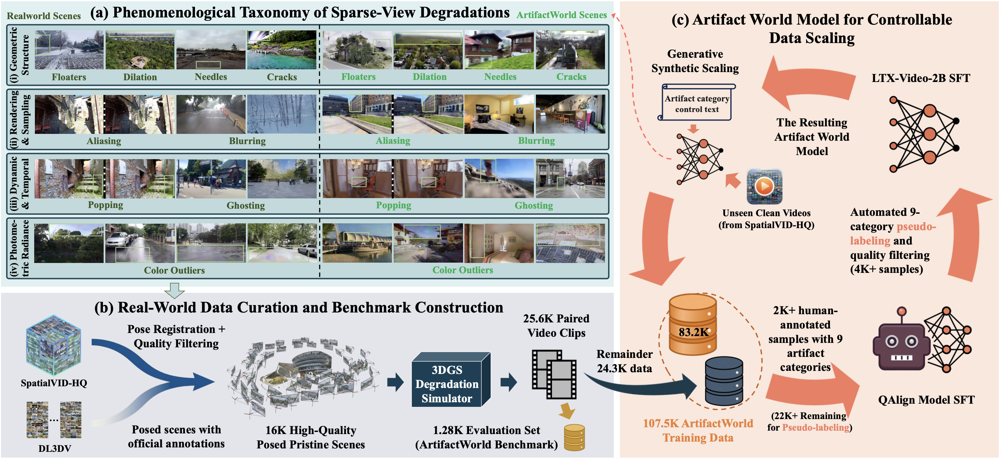
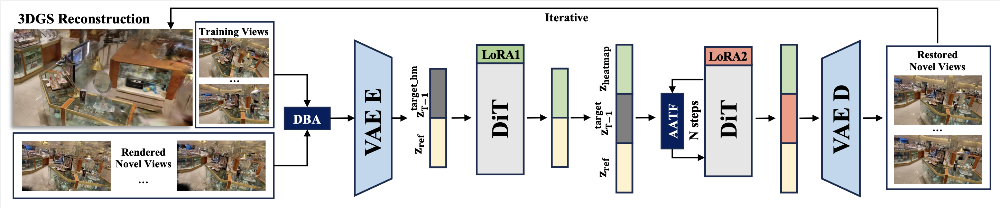

Abstract
3D Gaussian Splatting (3DGS) delivers high-fidelity real-time rendering but suffers from geometric and photometric degradations under sparse-view constraints. Current generative restoration approaches are often limited by insufficient temporal coherence, a lack of explicit spatial constraints, and a lack of large-scale training data, resulting in multi-view inconsistencies, erroneous geometric hallucinations, and limited generalization to diverse real-world artifact distributions. In this paper, we present ArtifactWorld, a framework that resolves 3DGS artifact repair through systematic data expansion and a homogeneous dual-model paradigm. To address the data bottleneck, we establish a fine-grained phenomenological taxonomy of 3DGS artifacts and construct a comprehensive training set of 107.5K diverse paired video clips to enhance model robustness. Architecturally, we unify the restoration process within a video diffusion backbone, utilizing an isomorphic predictor to localize structural defects via an artifact heatmap. This heatmap then guides the restoration through an Artifact-Aware Triplet Fusion mechanism, enabling precise, intensity-guided spatio-temporal repair within native self-attention. Extensive experiments demonstrate that ArtifactWorld achieves state-of-the-art performance in sparse novel view synthesis and robust 3D reconstruction.
Data: Generative Flywheel Dataset
We built the largest 3DGS restoration dataset to date to break the data scaling bottleneck.
- Taxonomy: Defined 9 fine grained 3DGS sparse view artifact types across 4 domains.
- Generative Engine: Automated data generation using a Vision Language Model and LTX Video to construct 107.5K diverse training pairs.
- Benchmark: Released a manually audited 1.28K evaluation set for standardized testing.

Method: Homogeneous Dual Model Paradigm
ArtifactWorld unifies spatial and temporal restoration within a single video diffusion backbone.
- Decoupled Boundary Anchoring (DBA): Anchors pristine ground truth views at temporal boundaries to provide clean spatial contexts.
- Isomorphic Prediction: Generates an explicit spatial heatmap internally to locate structural defects.
- Artifact Aware Triplet Fusion (AATF): Uses the heatmap for dynamic intensity guidance, repairing severe artifacts while preserving clean textures.
- Closed Loop Reconstruction: Distills restored frames back into 3D space to permanently eliminate geometric defects.

Artifact Restoration Comparisons
2D Restoration Comparison across 9 Artifact Categories.
Generative Reconstruction Comparisons
Generative reconstruction comparisons on DL3DV / Mip-NeRF 360.
Citation
@article{wang2026artifactworld,
title={ArtifactWorld: Scaling 3D Gaussian Splatting Artifact Restoration via Video Generation Models},
author={Wang, Xinliang and Shi, Yifeng and Wu, Zhenyu},
journal={arXiv preprint arXiv:2604.12251},
year={2026}
}